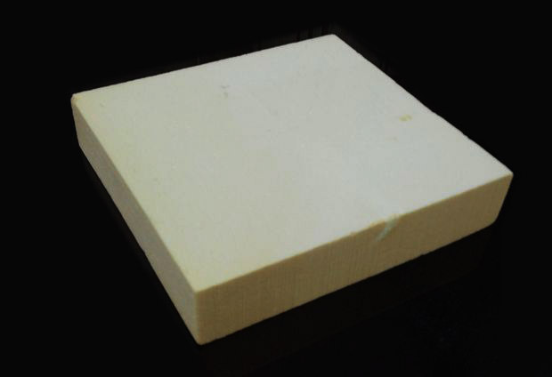
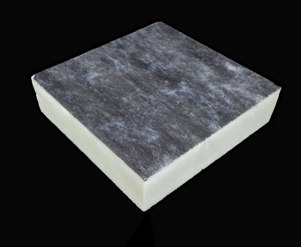

폴리우레탄(PUR: Polyurethane)은 이소시안산염(isocyanates),폴리올(polyols)의 반응에 의해 형성됩니다.
폴리우레탄은 일반적으로 보드 형태로 생산되지만, 창호나 출입문의 기밀유지재나 빈 공간의 충진재로도 사용됩니다.

경질 폴리우레탄 1종(좌)과 2종(우)
특히 단열재용의 경질 폴리우레탄 폼(Rigid Polyurethane Foam, RPF)은 이소시아네이트와 폴리올의 두 액을 혼합하고 그 후의 발열반응 과정에서 발포제를 주입하여 폼을 형성하며 이들과 첨가제의 선택에 따라 다양하게 설계됩니다.
경질 폴리우레탄 폼(RPF)의 최대 장점은 뛰어난 단열성능입니다.
열전도율은 0.020~25 W/mK 수준으로, 발포 폴리스티렌(EPS), 셀룰로오스보다는 꽤 낮은 편에 속합니다. 열전도율은 온도, 수분함량, 밀도에 따라 변화합니다. 예를 들어 수분함량이 0~10 vol%로 증가함에 따라 열전도율은 0.025~0.046 W/mK로 증가하게 됩니다.
반면, 폴리우레탄의 단점은 화재 시에는 심각한 건강상의 우려 및 위해를 가져올 수 있다는 것1)입니다.
화재 시 폴리우레탄은 시안화물(HCN) 및 이소시안산염과 같은 매우 유독한 물질을 배출하기 때문입니다.2)
1) 박종문, 김동환, 서동진 "친환경 건축물 단열재 최근 연구 동향" CLEAN TECHNOLOGY, Vol. 18, No. 1, March 2012, pp. 14~21
2)일부에서는 폴리우레탄의 경우 가스위해성 시험성적이 나오지 않는다고도 합니다만, 정확한 확인이 필요할 것 같습니다.
준불연 가등급 EPS 단열재 DK보드
건축용 / 드라이비트용 / 판넬용
문의 1855-2240